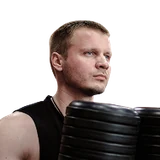
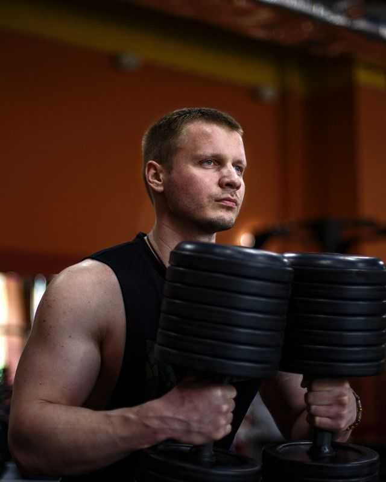

FT online — методика тренера Александра ЕлисееваОткрыл Telegram — и знаешь, что делать в зале сегодня
Бот собирает тренировку под твой стаж, возраст, цель и травмы. К каждому упражнению — видео техники, подходы, отдых и комментарий тренера.
Без карты. Откроется Telegram — первая тренировка через пару минут.
Потом — от 997 ₽ в месяц. Дешевле одной тренировки с тренером.
Сегодня работаем грудь + трицепс. Главная задача — техника и контроль амплитуды. Вес рабочий, без рывков.12:06
СВЕДЕНИЯ В ТРЕНАЖЁРЕ «БАБОЧКА»
15–20 повторений × 3 подхода
ОТДЫХ: 75–90 сек.12:06
Тренер ведёт тебя по всей тренировке
На каждое упражнение — три слоя, как у настоящего тренера. Открыл между подходами, глянул — сделал.
-
Что важно именно сейчас: где работать мощно, где подконтрольно, на что обратить внимание. Комментарии продолжают друг друга, поэтому к одному и тому же упражнению в разных тренировках они разные.
-
30–60 секунд: Александр показывает, как сесть, куда вести локти и как держать корпус. Без лекций.
-
Подходы, повторы, отдых, дыхание, фокус, техника, частые ошибки и совет тренера — на одном экране.
Сделай до упора, это твоё ключевое упражнение на грудь сегодня.12:06
СВЕДЕНИЯ В ТРЕНАЖЁРЕ «БАБОЧКА»
15–20 повторений × 3 подхода
ОТДЫХ: 75–90 сек.
ДЫХАНИЕ: Своди руки на выдохе, разводи на вдохе.
КОНЦЕНТРАЦИЯ: Грудь.
ТРЕНЕР: Держи грудь раскрытой и веди движение мягко, без броска назад.
ТЕХНИКА: Руки чуть согнуты, локти приподняты, корпус стабилен.
ЧАСТЫЕ ОШИБКИ: Низкие локти, рывки корпусом, неправильная высота сиденья.12:07
«Это мой голос в твоём кармане»
Тренировки под тебя, а не одна программа на всех
Перед стартом бот задаст несколько вопросов — это около 2 минут. От ответов зависит, какие упражнения ты получишь и с какой нагрузкой.

Вот как я подстраиваю тренировки:
Болит поясница или колени
Уберу упражнения с высокой нагрузкой на эти зоны.
Бот подстраивается и дальше: ставь лайк упражнениям, которые зашли, и дизлайк тем, что не нравятся. Тренажёр занят или его нет — жми «Заменить» и получишь равнозначное упражнение.
FT online — тренировочный помощник, а не врач. Если болит прямо сейчас, сначала покажись специалисту.
Первая тренировка уже ждёт тебя в Telegram
Ответь на пару вопросов — и бот соберёт тренировку под твой уровень, цель и ограничения. Начни с 10 бесплатных дней и почувствуй разницу между «просто сходил в зал» и тренировкой по системе.
Без карты. Первая тренировка — через пару минут.